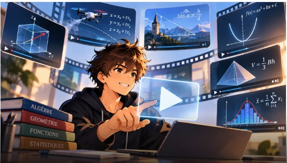

Des vidéos animées qui montrent à quoi servent les maths : chaque notion est reliée à une situation réelle, des jeux vidéo aux capteurs industriels. Conçues pour le programme de maturité professionnelle du CFPT (Genève, Suisse), elles s’adressent aussi à celles et ceux qui veulent découvrir les maths autrement.
Certaines vidéos se terminent par un mini-jeu : c’est à toi de jouer, en utilisant la notion que tu viens de découvrir.
